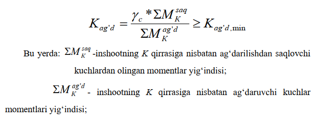
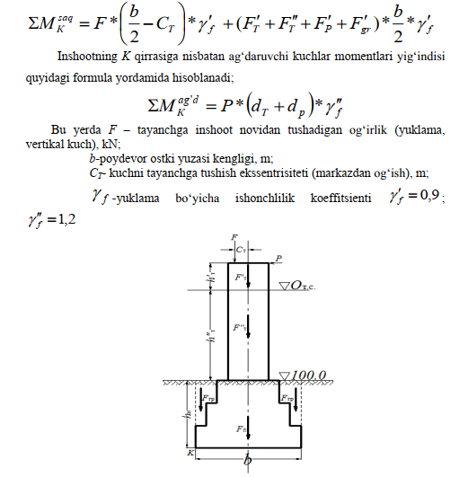
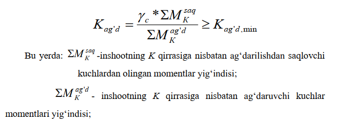
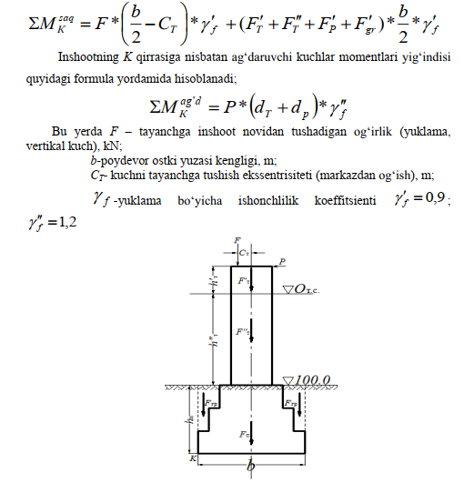

Poydevorni ustuvorlikka tekshirish
Katta miqdordagi gorizontal yuklar yoki momentlar ta‘sirida bo„lgan
nomarkaziy yuklangan poydevorlarni ustuvorligini tahlil qilishda ag‘darilishga va
siljishga ustuvorligi tekshiriladi. Loyihalanayotgan inshoot poydevorining
ag„darilishga bo„lgan turg‘unligini uning “K” qirrasiga nisbatan tekshirish orqali
aniqlanadi. Bunda “K” qirraga nisbatan ag‘darilishdan saqlovchi va ag‘daruvchi
kuchlardan momentlar olinadi. Poydevorning turg„unligini hisoblashda II –
guruhga mansub chegaraviy holatlar usulidan foydalaniladi, ya‟ni hisoblash
vaqtida tayanchning suv ostidagi qismiga, poydevorga va poydevor pog‘onasi
ustidagi gruntga suvning ko‘taruvchi ta‟sir kuchini e‟tiborga olish lozim. Hisoblash
eng noqulay sharoitlar uchun amalga oshiriladi. Shuning uchun, poydevorning
ag‘darilishga va siljishga bo„lgan turg‘unligini tekshirishda daryodagi suvning
toshqin vaqtidagi sathi e‟tiborga olinadi (6 - rasm.).
Hisobiy sxema tuzilgandan so‘ng, inshootning ag‘darilishga bo„lgan
turg„unligini ifodalovchi koeffitsient “Kag‘d” hisoblab topiladi va QMQ bo„yicha
yo‘l qo‘yiladigan eng kichik miqdor “Kag‘d,min” dan katta bo„lishi ta‘minlanadi,
ya‘ni:

K ag'd,min = 1,5 - Qurilish me‘yorlari va qoidalari talabi-bo‘yicha II
sinfga mansub gidrotexnik inshootlar uchun ag‘darilishga bo‘lgan turg‘unlik
koeffitsientining ruxsat etilgan minimal qiymati.
γc -ish sharoitlari koeffitsienti (3-jadval bo„yicha qabul qilinadi).
Inshootning K qirrasiga nisbatan ag„darilishdan saqlovchi kuchlardan olingan
momentlar yig‘indisi quyidagi formula yordamida hisoblanadi:

Poydevorning ag‘darilishga va siljishga bo‘lgan turg‘unligini
tekshirishga doir hisobiy sxema.
F'T – inshoot tayanchining suvdan yuqorida joylashgan qismidan ta‘sir
qiluvchi og„irlik kuchi bo‘lib, quyidagicha aniqlanadi (kN)
F' T = bt *lt *dt't*γb
FT" – inshoot tayanchining suv ostidagi qismidan ta‘sir qiluvchi og‘irlik
kuchi bo‘lib, quyidagicha aniqlanadi (kN).
F"T = bt *lt *d"t *(γb
γw)
dt't – inshoot tayanchining suvdan yuqorida joylashgan qismi balandligi;
dt"t – inshoot tayanchining suv ostidagi qismi balandligi;
γb - betonning solishtirma og‘irligi.
F'P – inshoot poydevorining og‘irlik kuchi bo‘lib, quyidagicha aniqlanadi
(kN).
F'P = VP *(γb-γw )
VP – inshoot poydevorining hajmi (m3):
γb - betonning solishtirma og‘irligi.
F'gr - poydevor pog‘onalari ustida joylashgan gruntning og‘irlik kuchi (kN):
F'gr = Vgr *(γsat - γw)
Vgr – poydevor pog‘onalari ustida joylashgan gruntning hajmi (m3);
γsat - suvga to„yingan holatdagi gruntning solishtirma og„irligi (kN/
m3);
γw - suvning solishtirma og‘irligi (kN/ m3).
Ish sharoiti koeffitsientining qiymati

K ag'd,min = 1,5 - Qurilish me‘yorlari va qoidalari talabi-bo‘yicha II sinfga mansub gidrotexnik inshootlar uchun ag‘darilishga bo‘lgan turg‘unlik koeffitsientining ruxsat etilgan minimal qiymati. γc -ish sharoitlari koeffitsienti (3-jadval bo„yicha qabul qilinadi). Inshootning K qirrasiga nisbatan ag„darilishdan saqlovchi kuchlardan olingan momentlar yig‘indisi quyidagi formula yordamida hisoblanadi:

F'T – inshoot tayanchining suvdan yuqorida joylashgan qismidan ta‘sir qiluvchi og„irlik kuchi bo‘lib, quyidagicha aniqlanadi (kN)
F' T = bt *lt *dt't*γb
FT" – inshoot tayanchining suv ostidagi qismidan ta‘sir qiluvchi og‘irlik kuchi bo‘lib, quyidagicha aniqlanadi (kN). F"T = bt *lt *d"t *(γb γw)
dt't – inshoot tayanchining suvdan yuqorida joylashgan qismi balandligi;
dt"t – inshoot tayanchining suv ostidagi qismi balandligi;
γb - betonning solishtirma og‘irligi.
F'P – inshoot poydevorining og‘irlik kuchi bo‘lib, quyidagicha aniqlanadi (kN).
F'P = VP *(γb-γw ) VP – inshoot poydevorining hajmi (m3): γb - betonning solishtirma og‘irligi. F'gr - poydevor pog‘onalari ustida joylashgan gruntning og‘irlik kuchi (kN):
F'gr = Vgr *(γsat - γw)
Vgr – poydevor pog‘onalari ustida joylashgan gruntning hajmi (m3);
γsat - suvga to„yingan holatdagi gruntning solishtirma og„irligi (kN/ m3);
γw - suvning solishtirma og‘irligi (kN/ m3).
Ish sharoiti koeffitsientining qiymati
| Zamindagi grunt | γc |
|---|---|
| Yirik, o'rtacha | 1,0 |
| Changsimon qumlar, supes | 0,9 |